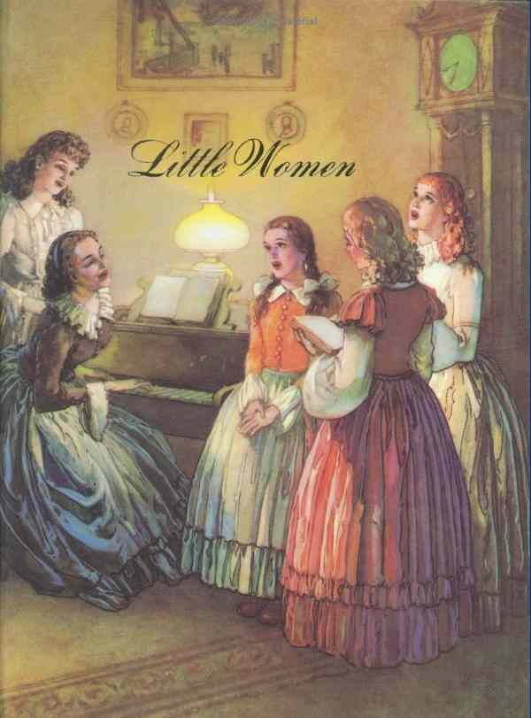
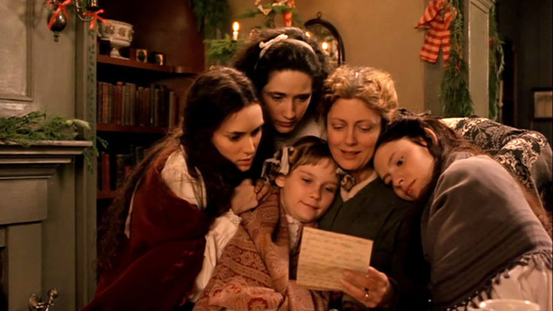
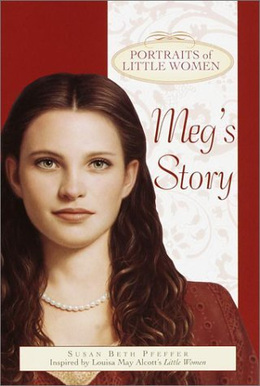
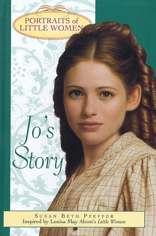
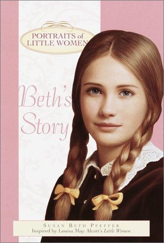
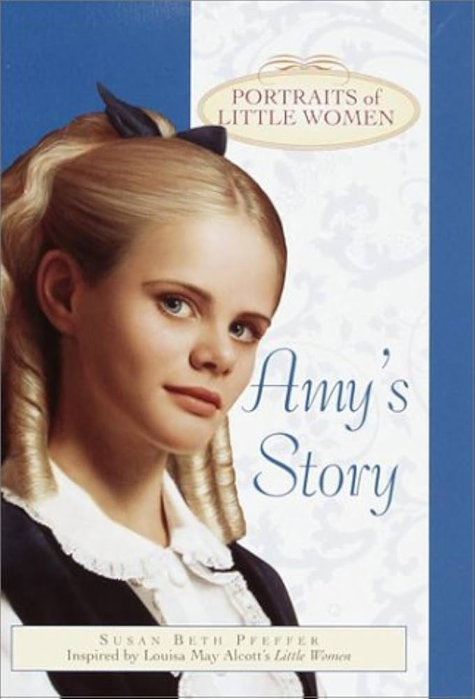

SECTION IV
Jo's Writing Desk
❦
Click on the items on Jo's desk to discover what fuels her ambition and stories.
Select an object on the desk below...
A CLASSIC NOVEL
A story of sisterhood, dreams & becoming yourself

ABOUT THE NOVEL
Little Women is a timeless story about four sisters—Meg, Jo, Beth, and Amy—who grow up together during the American Civil War.
Although they have different dreams, personalities, and struggles, their love for one another keeps them close through every joy and hardship.
Filled with warmth, family, friendship, love, and the courage to follow your own dreams, Little Women reminds us that growing up does not mean growing apart.
.jpeg)
SECTION I
Set in 19th-century New England during the American Civil War, Little Women mainly takes place in the March family home in Concord, Massachusetts.
The story follows the four March sisters as they grow up in a changing world, surrounded by family, friends, and the challenges of everyday life.
SECTION II
Little Women inspires women to embrace their individuality and choose their own paths in life.
Through the four March sisters, the novel shows that there is no single definition of success or happiness.
Whether pursuing a career, building a family, creating art, or following personal dreams, every woman has the right to define her own future.

SECTION III
Turn the pages to discover what each March sister represents.

Meg represents family, love, responsibility, and contentment. She dreams of a happy home and a loving family.

Jo represents independence, ambition, creativity, and determination.

Beth represents kindness, gentleness, selflessness, and unconditional love.

Amy represents ambition, artistry, confidence, and self-development.
SECTION V
Little Women is not only a story about growing up. It asks what it means for a woman to build a life that feels truly her own.
Jo refuses to make herself smaller simply to fit expectations. Her writing becomes a way to claim a voice on her own terms.
The March sisters do not all imagine adulthood in the same way. Their choices make room for different ideas of happiness.
The sisters learn that dreams also have practical sides: work, money, education, and independence.
Independence does not mean standing alone. The sisters grow through encouragement and believing in each other.
SECTION IV
Click on the items on Jo's desk to discover what fuels her ambition and stories.
Select an object on the desk below...
"A girl can have a dream and make it her own."
SECTION VII
Follow the sisters through a visual journey of growing up.
Four sisters share one home while each quietly imagines a different future.
The sisters discover that becoming an adult means making choices.
Joy and hardship push each sister to reconsider what she values.
The sisters do not become the same kind of woman. Their differences are part of the story.
SECTION VIII
SECTION IX
Pick the answer that feels most like you to discover which sister's spirit you resemble.
THE FINAL CHAPTER
The story of the March sisters reminds us that growing up means discovering who you are and creating a life you love.
↻ Read from the beginning